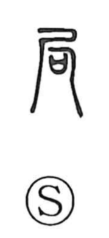

局

Uncategorized
Kun: tsubone | On: kyoku
bureau ・ office ・ section ・ game round
Explanation
Shirakawa reads this graph as a compound of shaku 尺, the container 口 used to hold covenant-prayers, and an element written like 月 that depicts the crouched‑limb burial pose, with the dead person’s arms and legs bent. In origin, then, the character names the method of interring a stooped, contracted body. From that image of drawing in and confinement come the senses of contraction and delimitation, which develop into “a bounded part” (a section, locality, or bureau) and, by analogy, the bounded field of play in board games—hence the meaning of a single game or round.